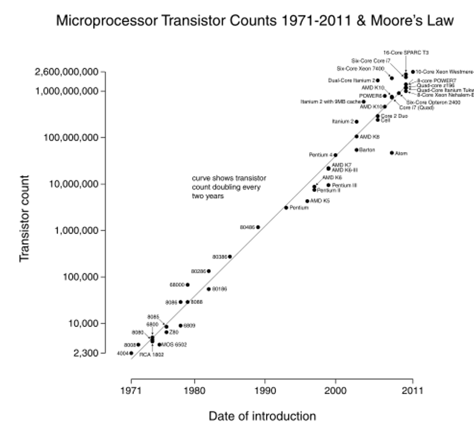
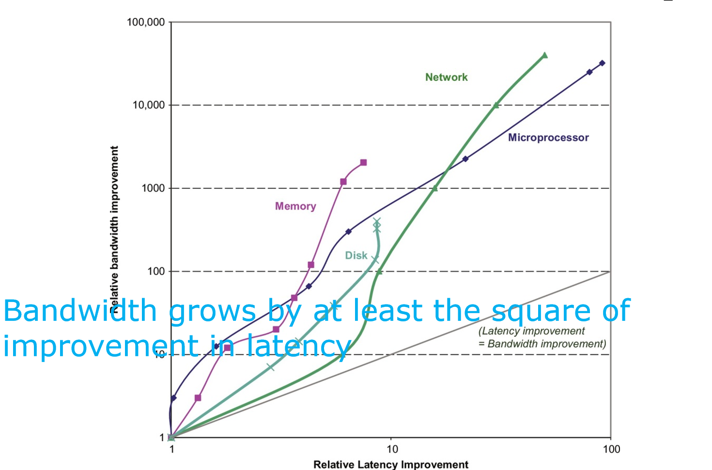

计算机体系结构1-2:趋势、量化与设计原则
第五部分：驱动架构演进的技术趋势
架构师并非在真空中进行设计，我们所有的奇思妙想都必须建立在坚实的物理和技术基础之上。技术的演进速度和方向，决定了我们设计空间的边界。
5.1 半导体技术的演进
计算机系统由五大关键技术构成：集成电路逻辑、DRAM、闪存、磁盘和网络。它们的发展速度并不均衡，这种不均衡恰恰是架构师面临的最大挑战和机遇。
-
集成电路逻辑 (Integrated Circuit Logic) - 摩尔定律的遗产
- 历史：摩尔定律预测，芯片上集成的晶体管数量大约每18-24个月翻一番。这一定律在长达近50年的时间里，以惊人的准确性推动了整个行业的发展，带来了每年40%-55%的晶体管数量增长。 
- 现状：大约在2015年后，摩尔定律的指数增长效应开始显著放缓。虽然工艺节点（Feature Size）仍在缩小（如5nm, 3nm），但成本的增加和物理极限的挑战使得单纯依靠晶体管数量翻倍来驱动性能提升的时代已经结束。
- 架构师的启示：我们不能再指望“下一代工艺会自动带来性能提升”。设计的重点必须从利用“免费”的晶体管，转向如何更聪明地利用有限的晶体管和功耗预算。这直接催生了专用加速器（如TPU、NPU）和异构计算的兴起。
-
动态随机存取存储器 (DRAM) - 容量的胜利
- DRAM的演进主要体现在容量上。其容量大约每2-3年翻一番。
- 设计权衡：DRAM的设计目标首要在于高密度和低成本，这使得其单个存储单元结构简单（一个晶体管+一个电容）。但这种结构的代价是速度相对较慢，并且需要不断刷新以维持数据。DRAM的速度（延迟）改进远远落后于其容量改进。
-
闪存 (Semiconductor Flash) - 非易失性存储的革命
- 作为一种EEPROM，闪存（特别是NAND Flash）以其非易失性（断电不丢数据）、高密度和比DRAM低得多的成本（每比特便宜8-10倍），成为了移动设备和固态硬盘（SSD）的标准存储介质。其容量增长速度与DRAM类似，大约每两年翻一番。
-
磁性磁盘 (Magnetic Disk) - 冷数据的基石
- 在2011年之前，磁盘的存储密度也曾经历过高速增长。但近年来，其增长率已降至每年5%以下。
- 设计权衡：磁盘的优势在于其极致的每比特成本（比闪存便宜8-10倍，比DRAM便宜200-300倍），这使其成为服务器和数据中心存储大量“冷数据”的无可替代的选择。但它的性能，尤其是延迟，是所有存储介质中最差的。
5.2 性能趋势的核心矛盾：带宽 vs. 延迟
如果我们审视所有这些技术的发展，会发现一个惊人的共同规律：带宽的提升速度远远超过延迟的降低速度。

- 带宽/吞吐率 (Bandwidth/Throughput)：单位时间内完成的工作总量。
- 延迟/响应时间 (Latency/Response Time)：完成单个事件所需的时间。
为什么会这样？ 这是一个深刻的设计哲学问题。提升带宽通常可以通过并行来实现：增加内存位宽、使用更多光纤、在芯片上集成更多核心。这本质上是“堆料”，在技术上相对容易。而降低延迟则需要改进技术的根本物理特性：加快晶体管开关速度、缩短信号传播距离、减少协议开销。这常常会遇到物理瓶颈，改进极其困难。
- 对微处理器和网络而言：性能是首要目标。带宽提升了数万倍，而延迟只改善了不到百倍。
- 对内存和磁盘而言：容量是首要目标。因此其带宽提升相对温和，延迟改善更是微乎其微。
架构师的挑战与应对：正是这种巨大的差异（CPU越来越快，内存和磁盘相对越来越慢），催生了我们在上一讲讨论的复杂存储器层次结构（Cache）。缓存的本质，就是用高带宽、低延迟的SRAM来掩盖高延迟的DRAM和磁盘，从而弥合这种技术发展的不均衡性。
第六部分：功耗与能源的挑战
如果说技术是引擎，那么功耗就是刹车。21世纪以来，功耗和能源已经取代性能，成为计算机设计的首要限制因素。
6.1 为什么功耗如此重要？
- 对于数据中心：功耗直接等同于运营成本。电费和为服务器散热的费用是巨大开销。
- 对于移动设备：功耗决定了电池续航，这是用户体验的核心。
- 对于所有设备：功耗最终转化为热量。散热系统的成本、体积和噪音都是设计的关键考量。无法散出的热量会导致芯片过热、性能下降甚至永久性损坏。
6.2 功耗的来源：动态与静态
芯片的功耗主要来自两部分：
-
动态功耗 (Dynamic Power)：来自于晶体管的开关动作（0变1或1变0）。这是过去主要的功耗来源。 $$ \text{Power}_{\text{dynamic}} \propto \frac{1}{2} \times \text{Capacitive load} \times \text{Voltage}^2 \times \text{Frequency switched} $$
- 关键洞察：动态功耗与电压的平方成正比！这是架构师进行功耗优化的最有力杠杆。降低15%的电压，可以带来约28%（$1 - 0.85^2$）的能耗节省。
-
静态功耗 (Static Power)：来自于晶体管的漏电流（Leakage）。即使晶体管没有在开关，它也不是完美的绝缘体，总有微小的电流流过。 $ \text{Power}{\text{static}} \propto \text{Current}{\text{static}} \times \text{Voltage} $
- 趋势：随着工艺节点越来越小，晶体管的绝缘层越来越薄，漏电流问题变得日益严重。在现代芯片中，静态功耗已占总功耗的相当大一部分（有时甚至超过50%）。
6.3 功耗优化的设计哲学
面对功耗墙，架构师发展出了一系列精妙的节能技术：
- 无为而治 (Do Nothing Well)：一个最简单的哲理是，不工作的部件就不应该耗电。时钟门控 (Clock Gating) 技术可以关闭芯片中处于空闲状态模块的时钟信号，从而消除这部分的动态功耗。
- 动态电压频率调整 (DVFS - Dynamic Voltage-Frequency Scaling)：系统根据当前的负载动态调整CPU的工作电压和频率。负载低时，降低电压和频率，可以大幅节省功耗；负载高时，再恢复到高性能状态。
- 一个重要的辨析：对于一个固定的任务，单纯降低频率可以降低功率，但不能节省总能量。因为功率下降的同时，执行时间也相应延长，两者的乘积（能量）不变。DVFS之所以能节省能量，是因为它同时降低了电压。
- 为典型场景设计 (Design for Typical Case)：大部分时间里，电脑都不是满负荷运行的。因此，内存和存储设备都设计了多种低功耗模式（睡眠、休眠）。
- 短时超频 (Turbo Mode / Overclocking)：利用芯片的热容。在短时间内，允许芯片以超过其额定TDP（热设计功耗）的更高频率运行，只要其温度还没达到上限。一旦温度过高，再降回正常频率。这可以在不改变散热设计的前提下，有效提升短时任务的响应速度。
- 奔向停机 (Race-to-Halt)：这是一个反直觉的系统级节能策略。与其用一个低功耗但慢的处理器长时间工作，不如用一个高功耗但快的处理器迅速完成任务，然后让整个系统（包括内存、屏幕等其他耗电大户）进入深度睡眠状态。在很多场景下，后者消耗的总能量更少。
第七部分：成本的考量
成本是计算机设计中最现实的约束。一个无法以市场可接受的价格制造出来的设计，即使再完美也毫无意义。
7.1 成本的动态性
- 学习曲线 (Learning Curve)：任何制造工艺随着时间推移都会变得更成熟，从而降低成本。
- 产量 (Volume)：产量每翻一番，单位成本大约会下降10%。这就是为什么高产量的消费级芯片可以做到非常便宜。
- 商品化 (Commoditization)：当多种产品实现相同功能时（如PC主板），激烈的竞争会进一步压低价格。
7.2 集成电路的成本构成
芯片的制造成本主要由单个裸片（Die）的成本决定。 $$ \text{Cost of die} = \frac{\text{Cost of wafer}}{\text{Dies per wafer} \times \text{Die yield}} $$
-
每片晶圆的裸片数量 (Dies per wafer)： $$ \text{Dies per wafer} \approx \frac{\pi \times (\text{Wafer diameter}/2)^2}{\text{Die area}} - \frac{\pi \times \text{Wafer diameter}}{\sqrt{2 \times \text{Die area}}} $$
- 核心洞察：裸片数量与裸片面积（Die area）大致成反比。芯片面积越大，能切割出的数量就越少，成本越高。
-
裸片良率 (Die yield)：指一张晶圆上能够正常工作的裸片所占的比例。这是成本模型中最关键、也最敏感的因素。 $$ \text{Die yield} = \text{Wafer yield} \times (1 + \frac{\text{Defects per unit area} \times \text{Die area}}{\alpha})^{-\alpha} $$
- 核心洞察：良率与裸片面积高度负相关。一个大的芯片不仅切割数量少，而且它“撞上”一个制造缺陷的概率也更大，导致其良率更低。这两个因素叠加，使得大芯片的成本会呈指数级增长。
α是与工艺复杂度相关的经验常数，通常在4.0左右。
架构师的应对策略：
- 控制芯片面积：在设计时，架构师会极力避免不必要的复杂性以减小芯片面积。
- 模块化与冗余：现代大型芯片（如GPU和服务器CPU）通常采用模块化设计。如果一个模块有缺陷，可以屏蔽它，将芯片降级出售（如12核CPU屏蔽2个坏核心后作为10核CPU卖）。内存芯片（DRAM/SRAM）内部会集成备用的行和列，用于替换有缺陷的存储单元，从而大大提高良率。
7.3 成本 vs. 价格 与 资本支出 vs. 运营支出
- 成本 (Cost) 是制造成本，价格 (Price) 是销售价格。
价格 = 成本 + 利润。利润中包含了研发、市场、销售等费用。 - 对于大型数据中心，我们还需要区分：
- 资本支出 (CAPEX)：购买服务器、网络设备等硬件的一次性投入。
- 运营支出 (OPEX)：维持数据中心运行的持续性开销，主要是电费和人力成本。
- 设计趋势：现代数据中心设计越来越关注总体拥有成本 (TCO)，即CAPEX和OPEX之和。有时，购买更贵但更节能的服务器，从长期来看可能是更经济的选择。
第八部分：可靠性与可依赖性
随着晶体管尺寸缩小到纳米级别，以及系统日益复杂，单个组件发生故障的概率在增加。如何构建一个在面对故障时仍能提供正确服务的系统？这就是可依赖性 (Dependability) 设计要解决的问题。
8.1 故障、错误与失效的连锁反应
这三个概念的区分至关重要：
- 故障 (Fault)：系统的物理缺陷或设计上的 bug。例如，一段代码里
60 + 35 = 90是错误的。这是一个潜在的、静态的问题。 - 错误 (Error)：是故障被激活后的结果，导致系统内部状态偏离了正确值。例如，程序执行了
add(60, 35)，得到了错误的结果90。 - 失效 (Failure)：是错误外显出来，导致系统提供的服务不符合其规约。例如，由于计算结果是90，学生的最终绩点被错误地判定为4.5，而不是正确的4.0。
关键点：故障不一定会导致错误（如果错误代码段从未被执行），错误也不一定会导致失效（如果错误的中间结果在后续计算中被纠正或未使用）。可靠性设计的核心，就是切断这个连锁反应。
8.2 量化可靠性
- 模块可靠性 (Reliability)：衡量系统能持续提供正确服务的能力。
- MTTF (Mean Time To Failure)：平均无故障时间。
- MTTR (Mean Time To Repair)：平均修复时间。
- MTBF (Mean Time Between Failures)：平均故障间隔时间。 $\text{MTBF} = \text{MTTF} + \text{MTTR}$。
- 模块可用性 (Availability)：衡量系统在任意时刻能够正常工作的概率。
$$
\text{Module Availability} = \frac{\text{MTTF}}{\text{MTTF} + \text{MTTR}}
$$
- 高可用性系统追求的是多个“9”，例如“5个9”的可用性意味着一年中宕机时间不超过5.26分钟。
8.3 可靠性设计的核心思想：冗余 (Redundancy)
“不要把所有鸡蛋放在一个篮子里”。冗余是构建可靠系统的唯一途径。
- 空间冗余：部署多个相同的组件。一个坏了，另一个可以顶上。
- 时间冗余：重复执行一次操作。如果第一次因为瞬时干扰（如宇宙射线）而出错，第二次很可能就是对的。
- 信息冗余：增加额外的数据位（如ECC、奇偶校验），用于检测和纠正数据错误。
8.4 案例研究：磁盘阵列 RAID
RAID（廉价磁盘冗余阵列）是冗余设计思想的经典范例。它将多个独立的磁盘组合起来，以提供比单个磁盘更高的性能、更大的容量和更强的可靠性。
- RAID 0 (条带化)：只为性能，不提供冗余。数据被分散写入多个磁盘，可以并行读写，吞吐率很高。但任何一个磁盘损坏，所有数据都会丢失。
- RAID 1 (镜像)：最简单的冗余。将数据完整地复制到另一个磁盘。提供100%的数据冗余，但代价是50%的存储空间浪费。
- RAID 3/4 (奇偶校验)：更聪明的方法。使用一个专门的磁盘存储所有数据盘的奇偶校验信息。如果一个数据盘损坏，可以通过其他数据盘和校验盘的信息，像解方程一样恢复出丢失的数据。RAID 4相比RAID 3以数据块为单位，更适合小文件读写。
- 设计瓶颈：所有写操作都需要更新同一个校验盘，导致校验盘成为性能瓶颈。
- RAID 5 (分布式奇偶校验)：对RAID 4的完美改进。它将校验信息分散存储在所有磁盘上，消除了单一校验盘的瓶颈。这是目前应用最广泛的RAID级别之一。
- RAID 6 (双重校验)：随着磁盘容量越来越大，在单盘损坏后进行数据重构（Rebuild）需要很长时间，期间如果再坏一块盘，数据就会丢失。RAID 6通过增加第二种独立的校验信息（如里德-所罗门码），可以容忍任意两块磁盘同时损坏，提供了更高的可靠性。
第九部分：性能的测量与报告
我们所有的设计和优化，最终都需要一个客观的标尺来衡量。如何科学地测量和比较计算机的性能？
9.1 性能的基本定义
对于一个给定的任务： $$ \text{Performance} = \frac{1}{\text{Execution Time}} $$ 如果计算机X比计算机Y快n倍，意味着： $$ n = \frac{\text{Execution time}_Y}{\text{Execution time}_X} = \frac{\text{Performance}_X}{\text{Performance}_Y} $$
- 执行时间 (Execution Time) vs. CPU时间 (CPU Time)
- 执行时间/墙上时钟时间 (Elapsed/Wall-clock Time)：用户从任务开始到结束所感知的总时间，包括了CPU计算、I/O等待、操作系统开销等。这是衡量用户体验的最终指标。
- CPU时间：仅指CPU真正在为该任务计算所花费的时间。这是衡量CPU自身性能的指标。
9.2 性能评测的基石：基准测试程序 (Benchmarks)
我们不能用单一的指标（如MIPS, MFLOPS）来评价性能，因为这无法反映真实应用的复杂性。唯一科学的方法是运行真实的应用或者能够代表真实应用负载的程序。
- SPEC (Standard Performance Evaluation Corporation)：最权威的CPU性能评测基准套件。
- SPECspeed (如 CINT2017 speed)：衡量单个任务的执行速度，关心的是响应时间。
- SPECrate (如 CINT2017 rate)：衡量单位时间内能完成多少个任务，关心的是吞吐率。
- TPC (Transaction Processing Council)：服务器领域，特别是数据库和在线交易处理的基准测试，如TPC-C, TPC-E。
9.3 性能的报告与总结
- 可复现性 (Reproducibility)：是性能报告的黄金准则。必须详细列出测试环境的所有细节（硬件配置、操作系统版本、编译器、编译选项等），以便他人能够复现你的结果。
- 如何总结多个程序的性能？
- 错误方法：使用算术平均值。这会不成比例地受到执行时间长的程序的影响。
- 正确方法：使用几何平均值 (Geometric Mean)。 $$ \text{Geometric mean} = \sqrt[n]{\prod_{i=1}^{n} \text{sample}_i} $$ 在使用SPECRatio（将执行时间相对于一台参考机器进行归一化）进行性能比较时，几何平均值具有一个优良特性：最终的性能比率与选择哪台参考机器无关。
9.4 处理器性能的“铁律”
最后，我们给出一个分解处理器性能的经典公式，它将硬件技术、组织结构和指令集/编译器联系在一起，是体系结构分析的核心工具。
$$ \text{CPU time} = \text{Instruction count} \times \text{CPI} \times \text{Clock cycle time} $$
或者写成： $$ \text{CPU time} = \frac{\text{Instruction count} \times \text{CPI}}{\text{Clock rate}} $$
- 指令数 (Instruction Count, IC)：由ISA和编译器决定。
- 每指令周期数 (Cycles Per Instruction, CPI)：由ISA和微体系结构（如流水线效率、缓存命中率）决定。
- 时钟周期时间 (Clock cycle time)：由硬件实现技术和微体系结构（如最长流水线级延迟）决定。
架构师的日常，就是在优化这三个变量的乘积。例如，RISC架构可能会增加IC，但它能显著降低CPI和时钟周期时间，从而获得总体性能的提升。